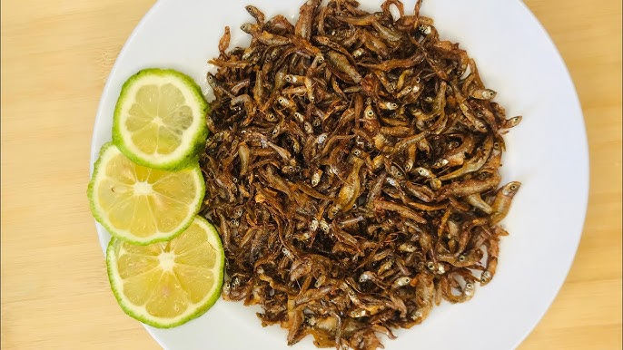

Home
Omena Dry Fry

An image of some tasty Omena Dry Fry
Ingredients
- 2 cups dried omena (silver cyprinid)
- 1 medium onion, finely sliced
- 2 tomatoes, finely chopped
- 1 green chili (optional), chopped
- 2 cloves garlic, minced
- 1-inch piece of ginger, minced
- 1 teaspoon paprika
- ½ teaspoon turmeric (optional)
- Salt to taste
- Juice of ½ lemon (for soaking)
- Water (for rinsing)
- 2–3 tablespoons vegetable oil
- A handful of chopped fresh coriander (dhania)
Steps
-
Rinse & Soak Omena:
- Put omena in a bowl.
- Rinse with warm water 2–3 times to remove dirt and bitterness.
- Add water and juice of half a lemon, soak for 5–10 minutes.
- Drain completely and pat dry with a kitchen towel.
-
Crisp the Omena:
- Heat 1 tablespoon oil in a pan.
- Add the omena and fry over medium heat until golden brown and crispy (5–7 minutes).
- Remove and set aside.
-
Prepare the Fry:
- In the same pan, add another 1–2 tablespoons of oil.
- Sauté onions until soft and slightly golden.
- Add garlic, ginger, and chili. Fry for 1 minute.
- Add tomatoes, paprika, turmeric, and salt. Cook until tomatoes break down into a thick paste.
-
Combine & Finish:
- Return the crispy omena to the pan. Stir well to coat.
- Let it cook together for 2–3 minutes for the flavors to marry.
- Finish with fresh coriander.
Serving Suggestion
Serve hot with ugali, sukuma wiki, or rice.